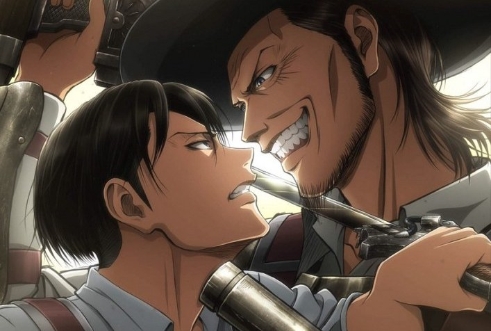

L’Attaque des Titans (進撃の巨人, Shingeki no Kyojin?, litt. Les Titans assaillants, souvent abrégé SnK) est un shōnen manga écrit et dessiné par Hajime Isayama. Il est prépublié depuis septembre 2009 dans le magazine Bessatsu Shōnen Magazine de l’éditeur Kōdansha, et trente-deux tomes sont sortis en septembre 2020. La version française est publiée par Pika Édition dans la collection seinen depuis juin 2013.
SourceL’histoire tourne autour du personnage d’Eren Jäger dans un monde où l’humanité vit entourée d’immenses murs pour se protéger de créatures gigantesques, les Titans. Le récit raconte le combat mené par l’humanité pour reconquérir son territoire, en éclaircissant les mystères liés à l’apparition des Titans.
Plus de cent ans avant le début de l’histoire, des créatures géantes humanoïdes nommées Titans (巨人, Kyojin?) sont subitement apparues et ont presque anéanti l’humanité. Ces créatures géantes font habituellement entre trois et quinze mètres de haut, avec quelques exceptions comme le Titan colossal qui en mesure soixante4. Il semblerait que les Titans dévorent les humains par instinct et uniquement pour les tuer : en effet, ils ne possèdent pas de système digestif et n’ont pas besoin de se nourrir, puisant leur énergie dans la lumière du soleil. Ils ont la peau dure, des capacités régénératrices et ne peuvent être tués que par une incision profonde à la base de la nuque5.
Pour se protéger, l’humanité vit entourée par un système de trois murs concentriques de cinquante mètres de haut, distants les uns des autres d’une centaine de kilomètres6. Le mur extérieur est le Mur Maria (ウォール・マリア, Wōru Maria?), l’intermédiaire est le Mur Rose (ウォール・ローゼ, Wōru Rōze?) et le central est le Mur Sina (ウォール・シーナ, Wōru Shīna?).
La lutte contre les Titans est organisée autour d’une armée répartie en trois branches. Le bataillon d’exploration (調査兵団, Chōsa Heidan?) effectue des expéditions de reconquête de territoire à l’extérieur des murs, là où se trouvent les Titans.
Source 